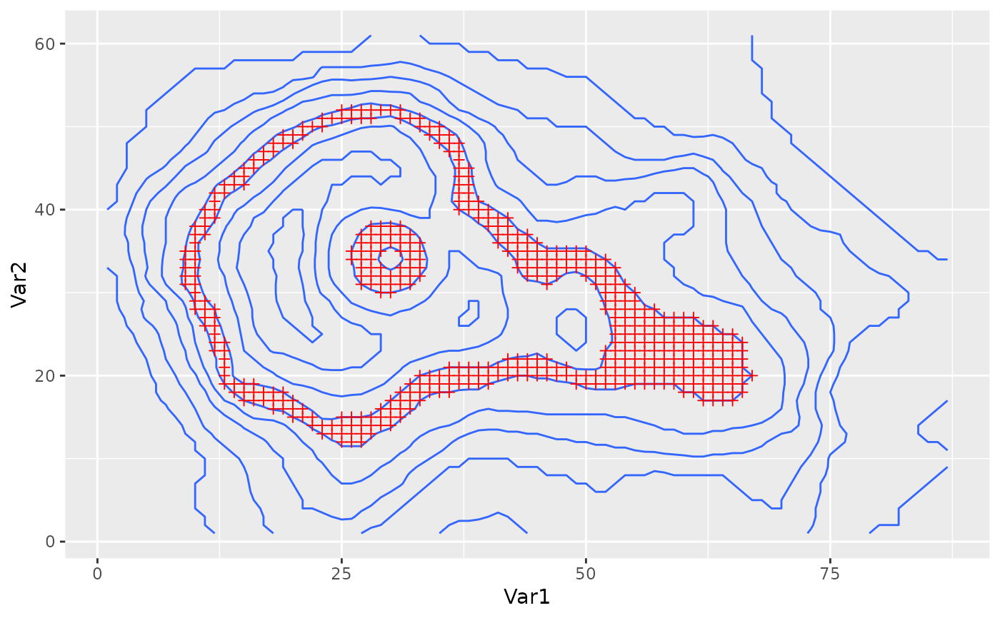

Removes values where subset evaluates to FALSE. Useful for showing only
statistical significant values, or an interesting subset of the data without
manually subsetting the data.
stat_subset(mapping = NULL, data = NULL, geom = "point", position = "identity", ..., show.legend = NA, inherit.aes = TRUE)
| mapping | Set of aesthetic mappings created by |
|---|---|
| data | The data to be displayed in this layer. There are three options: If A A |
| geom | The geometric object to use display the data |
| position | Position adjustment, either as a string, or the result of a call to a position adjustment function. |
| ... | Other arguments passed on to |
| show.legend | logical. Should this layer be included in the legends?
|
| inherit.aes | If |
stat_subset understands the following aesthetics (required aesthetics are in bold)
x
y
subset
width
height
stat_na for a more specialized stat for filtering NA values.
Other ggplot2 helpers: DivideTimeseries,
MakeBreaks, WrapCircular,
geom_arrow, geom_contour2,
geom_contour_fill,
geom_label_contour,
geom_relief, geom_streamline,
guide_colourstrip,
map_labels, reverselog_trans,
scale_divergent,
scale_longitude, stat_na
library(ggplot2) ggplot(data.table::melt(volcano), aes(Var1, Var2)) + geom_contour(aes(z = value)) + stat_subset(aes(subset = value >= 150 & value <= 160), shape = 3, color = "red")